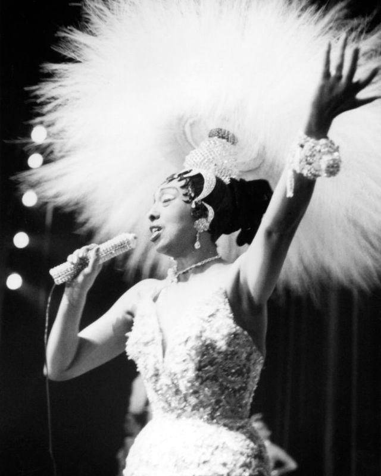
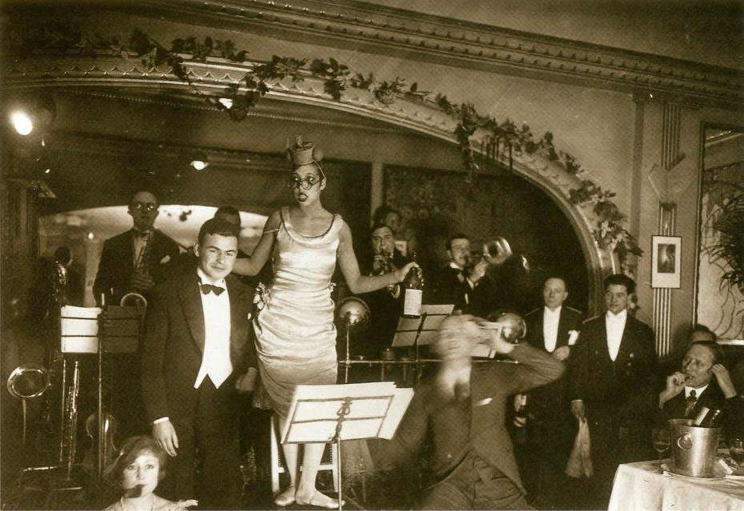
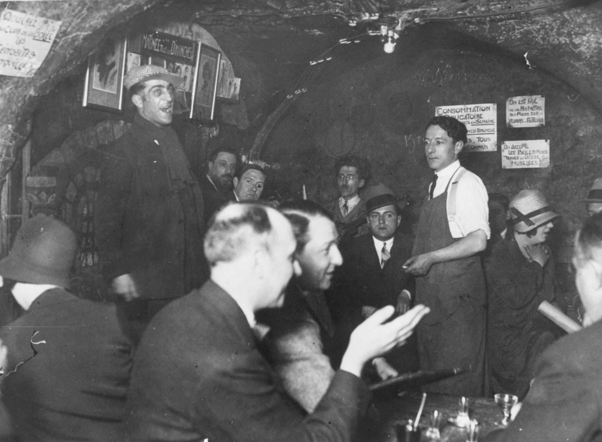
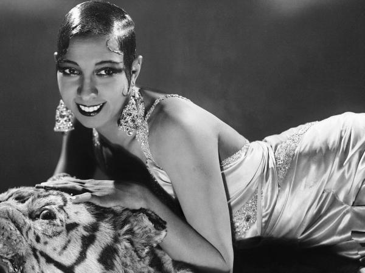
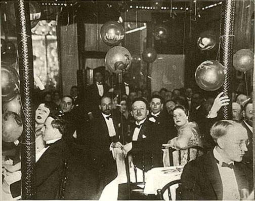
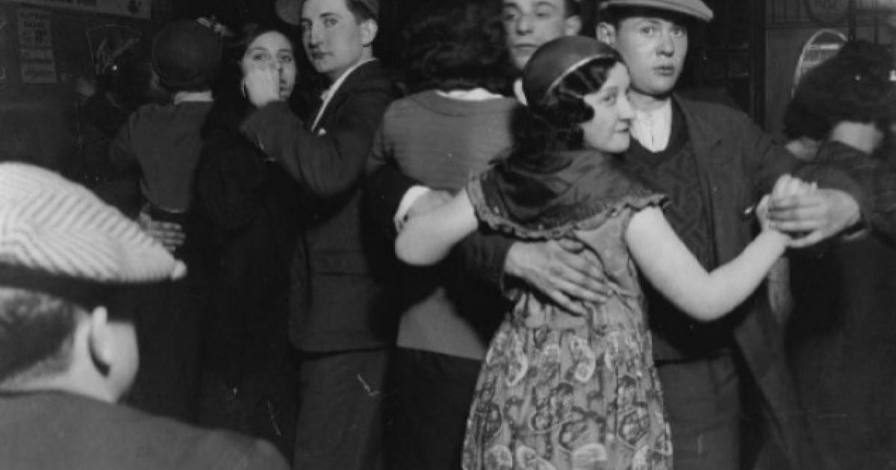
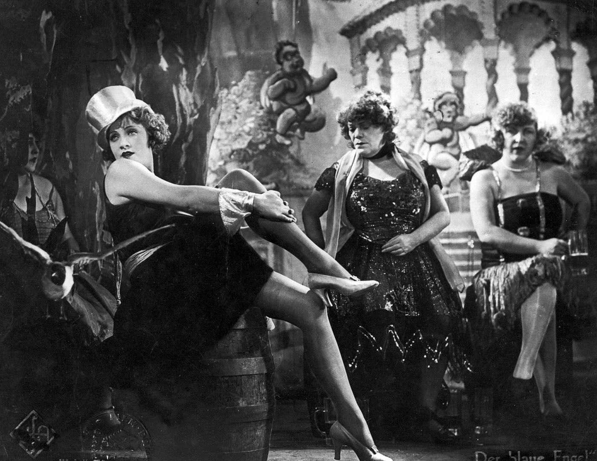

Example 1 — Josephine Baker in Paris
You arrive late, which is already a mistake. The room is packed—heat trapped under velvet and cigarette smoke. Someone laughs too loudly behind you; Americans, probably.
Then the orchestra snaps into rhythm—sharp, percussive, nothing like the polite European music you’re used to.
And she’s there.
Josephine Baker doesn’t enter so much as explode onto the stage—bare skin, the absurd banana skirt swinging with a kind of controlled chaos. The audience doesn’t know whether to laugh, stare, or look away. Some do all three.
What shocks you isn’t just the dance—it’s the energy. It feels modern, almost aggressive. Paris is supposed to be refined. This is something else: faster, freer, slightly dangerous.
You realize, halfway through, that this isn’t just entertainment. It’s a statement about race, sexuality, and modern life—and the room is divided between people who feel liberated and people who feel threatened.
...content...